Paper is one of the most accessible craft materials out there, and the best paper crafts ideas never require a special trip to the store. A stack of colored construction paper, a pair of scissors, and some glue are really all you need for a wonderful afternoon together. 🎨
This list has 20 of our favorite paper crafts ideas for kids of all ages, from quick and simple builds for toddlers to slightly more involved projects for older kids who want a real challenge. Every idea is beginner-friendly, low-mess, and ends with something your child will love to show off.
What You'll Need
These supplies cover nearly every paper craft idea on the list, so stock up once and you will be ready to go. ✂️
- Crayola Construction Paper, a 240-sheet assorted pack gives you every color you could need.
- Elmer's Washable School Glue, safe for kids and easy to clean up from surfaces and clothes.
- Fiskars Training Scissors for Kids, easy-grip and safe for little hands ages 3 and up.
- Self-Adhesive Googly Eyes, assorted sizes perfect for animals, creatures, and puppets.
- Crayola Washable Watercolors, great for adding painted details and color washes.
- Washable markers, for drawing faces and decorative details.
- Clear tape or a stapler, handy for 3D shapes and hanging projects.
- String or yarn, needed for any mobiles or hanging crafts on the list.
20 Easy Paper Crafts Ideas to Try with Your Kids
1. Paper Rainbow Art
Cut long strips of construction paper in red, orange, yellow, green, blue, and purple, then glue them in arching rows onto a white background to build a cheerful rainbow. Add two small white cloud shapes at each end to complete the classic look. This is one of those paper crafts ideas that toddlers can genuinely help with from start to finish. The bright colors and satisfying arc make every finished rainbow feel like a real keepsake. 🌈
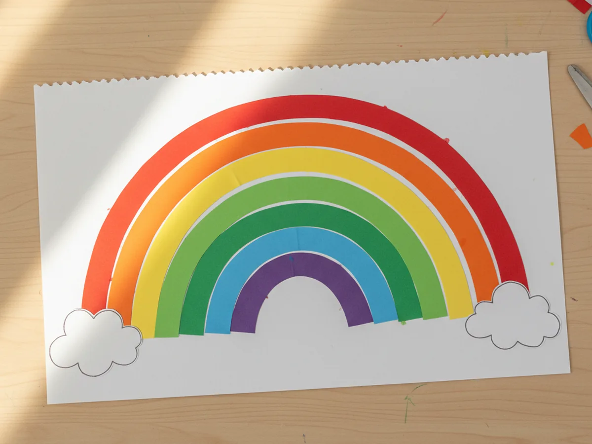
2. Paper Butterfly
Fold a sheet of colorful paper in half and cut a wing shape from the fold so the two wings mirror each other perfectly when you open it up. Pinch and accordion-fold a narrow strip of paper for the body, then clip or tape it at the center of the wings. Add antennae made from two small twisted paper strips. Kids love how symmetrical and pretty the result looks, and this is a paper craft idea that works beautifully on any color of paper.
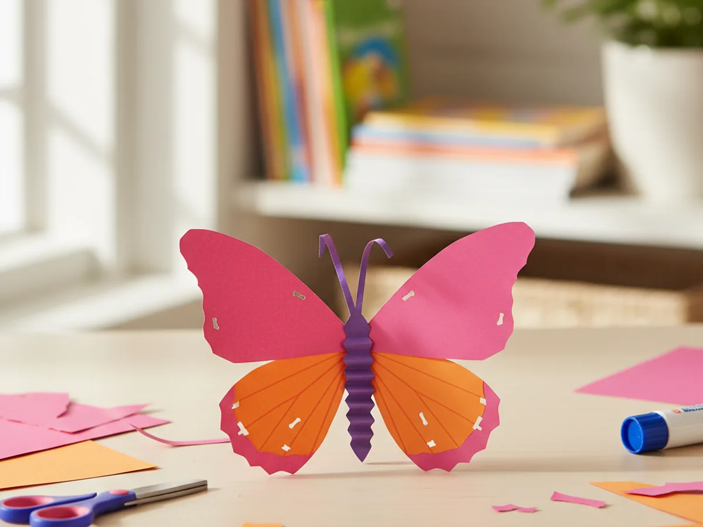
3. Paper Crown
Cut a wide strip of cardstock long enough to wrap around your child's head and cut a zigzag or scalloped edge along the top to form the points of the crown. Staple or tape the ends together once sized, then let your child decorate it with stickers, glitter glue dots, or marker jewel drawings. Every child feels instantly royal the moment they put it on. Among easy paper crafts ideas, this one delivers an outsized reaction for very little effort.
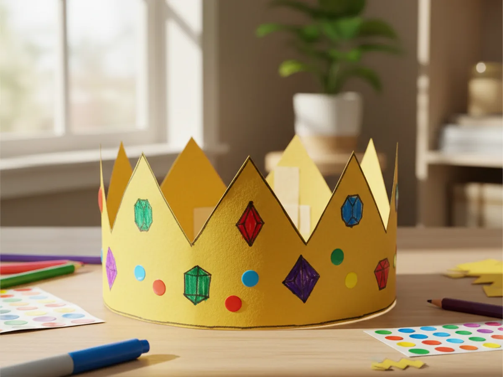
4. Paper Flower Bouquet
Cut simple five-petal flower shapes from colorful paper, layer two or three together with a small circle center, and glue them onto green paper stem strips with leaf cutouts. Bundle several finished flowers together and secure them near the base with a rubber band or ribbon. The bouquet looks genuinely sweet and makes a wonderful gift for grandparents or teachers. This is one of those paper crafts ideas where kids beam with pride when they hand it over.
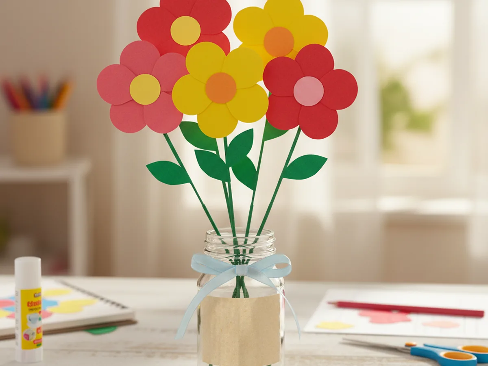
5. Paper Caterpillar
Cut several circles from green construction paper of the same size, then accordion-fold a long strip so the circles stack and wobble like a body when the strip is released. Glue googly eyes and paper antennae onto the first circle for the head. Younger kids love watching the caterpillar spring and bounce when they pick it up. It is one of the simplest paper crafts ideas on this list and one of the most consistently delightful for little ones.
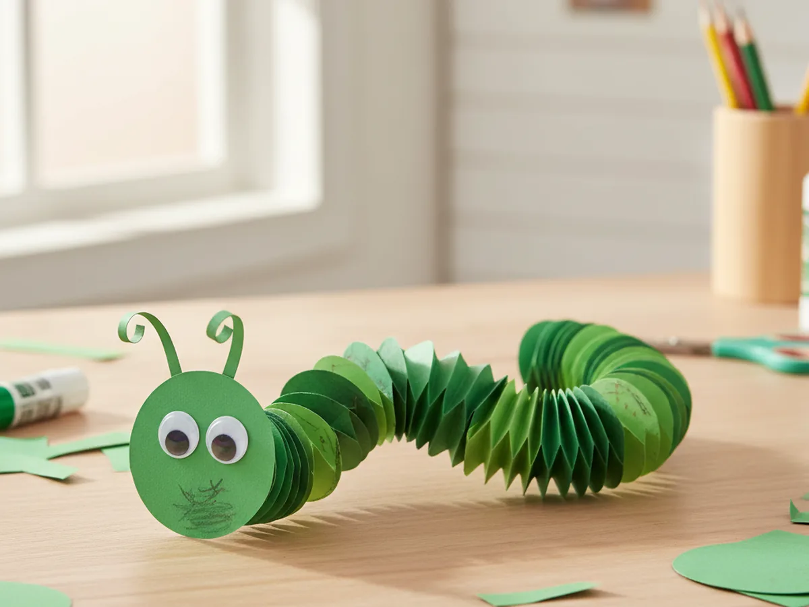
6. Paper Fish
Cut an oval body shape from blue or orange paper and fold a small triangle of scrap paper to create a tail fin, gluing it at the back. Add a large circle eye, scale markings with a marker, and smaller triangle fins on the belly and top. Arrange several finished fish on a blue paper background for an easy underwater scene. This versatile paper craft idea works for toddlers with simple cuts and looks wonderful displayed on a bedroom wall.
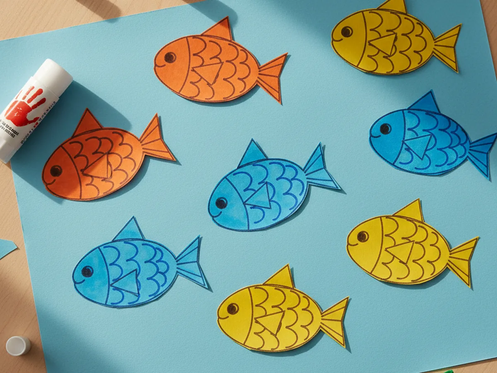
7. Paper Boat
Fold a single rectangular sheet of paper using the classic origami boat method, tucking the corners and shaping the hull so it holds its form. Older kids can add a paper mast with a triangle sail glued to a straw. These boats actually float in a shallow tray of water for a few minutes, which turns a simple paper crafts idea into a real hands-on science moment. Make a few in different sizes and race them across the water.
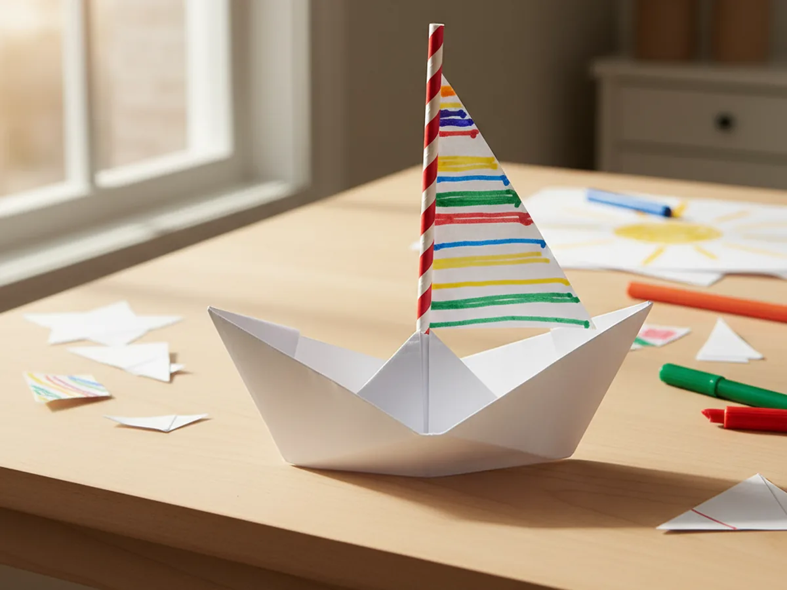
8. Paper Dinosaur
Draw and cut a simple T-rex or long-neck dinosaur silhouette from green or blue cardstock, then use a marker to add scales, claws, and a friendly eye. Cut small triangle spikes from a contrasting color and glue them along the spine. Stand the dinosaur upright by folding a small tab at the base. Kids who love dinosaurs get completely absorbed in this project and often want to make a whole herd of different paper crafts ideas around the same theme.
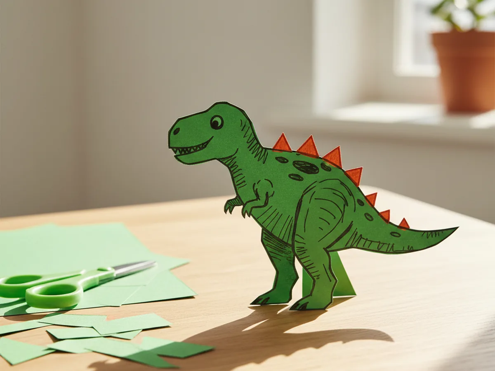
9. Paper Corner Bookmark
Fold a square of paper diagonally into a triangle, then tuck the two bottom corners up to meet the top point to form a pocket that slips over the corner of a page. Decorate the outside flap as an animal face, a funny monster, or a simple heart. This is a practical paper craft idea that older kids feel genuinely proud to use in their own books or give as gifts. The fold takes a minute to learn but the result looks polished and impressive.
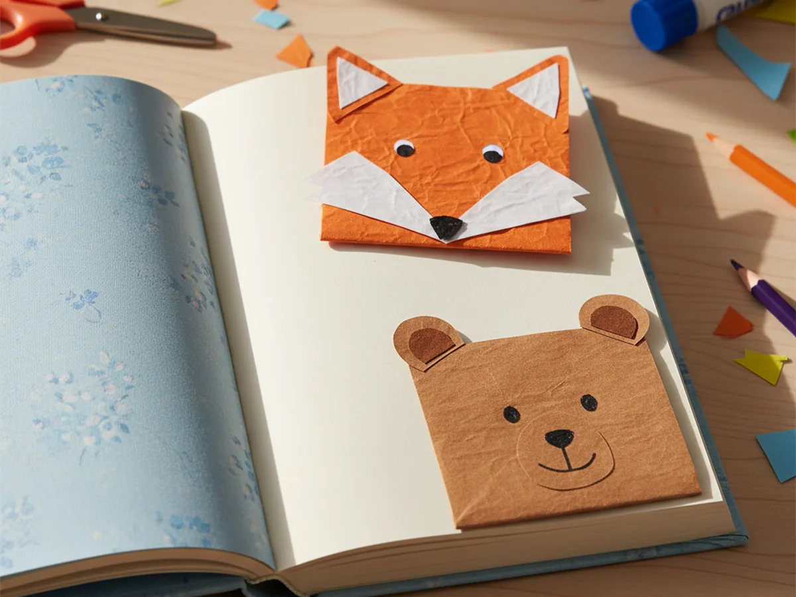
10. Paper Ladybug
Cut a large red circle for the body, then fold it lightly and draw a center line to divide the wings. Add a smaller black circle for the head, round black dot spots across the wings, two googly eyes, and thin black paper antennae. The ladybug comes together in minutes and looks very cheerful on the finished craft. This is one of the most popular paper crafts ideas for preschoolers because the simple shapes are easy to cut and the result is instantly recognizable.
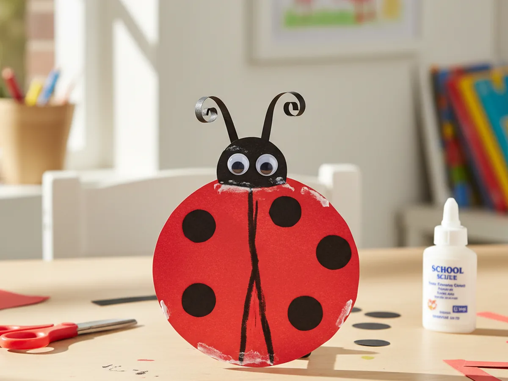
11. Paper Whale
Cut a large teardrop shape from blue paper for the whale body and a small curving tail fluke shape to attach at the narrow end. Add a white oval belly, a small round eye, and a curling paper water spout coming from the top. The whale is adorable standing on its belly on a shelf or hanging from a thread by the tail. Among ocean-themed paper crafts ideas, this one is especially popular with younger kids who love the gentle and friendly finished look.
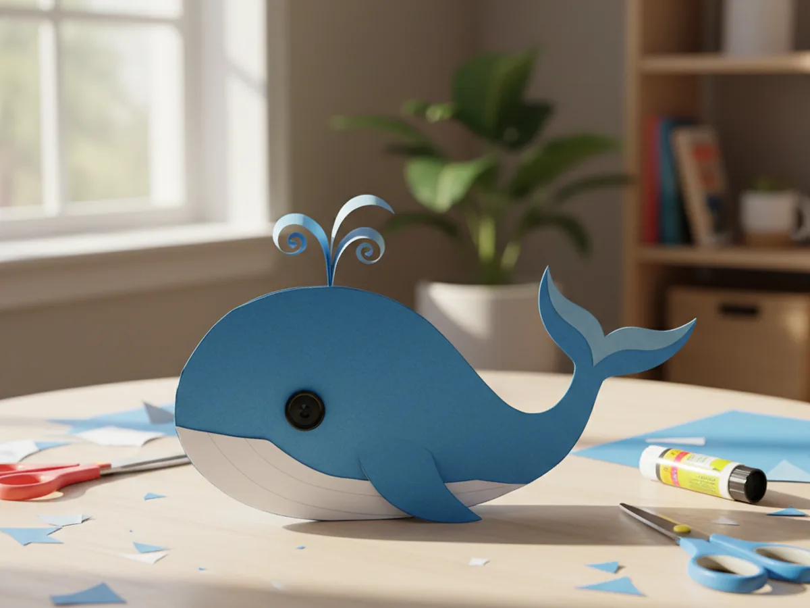
12. Paper Spiral Snake
Draw a large spiral on a circle of paper, starting from the outside edge and coiling inward to a small oval head at the center, then cut along the spiral line. When you hold the head up the snake uncoils and dangles with a lovely swaying motion. Decorate with stripes, spots, or scales before cutting. This is one of those surprisingly satisfying paper crafts ideas where the magic reveal, when the spiral drops into a dangling snake, always gets a big reaction.
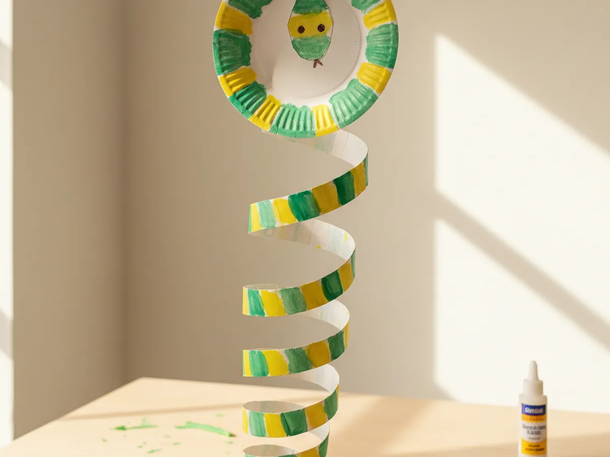
13. Paper Sunflower
Cut a large brown circle for the center and surround it with two overlapping rings of long yellow paper petals cut from strips. Glue everything onto a green paper stem with two large leaf cutouts. The finished sunflower is bold, bright, and instantly cheerful on any wall or windowsill. This is a great paper craft idea for spring or summer and an easy one to adapt for younger kids by pre-cutting the petal shapes before the activity starts.
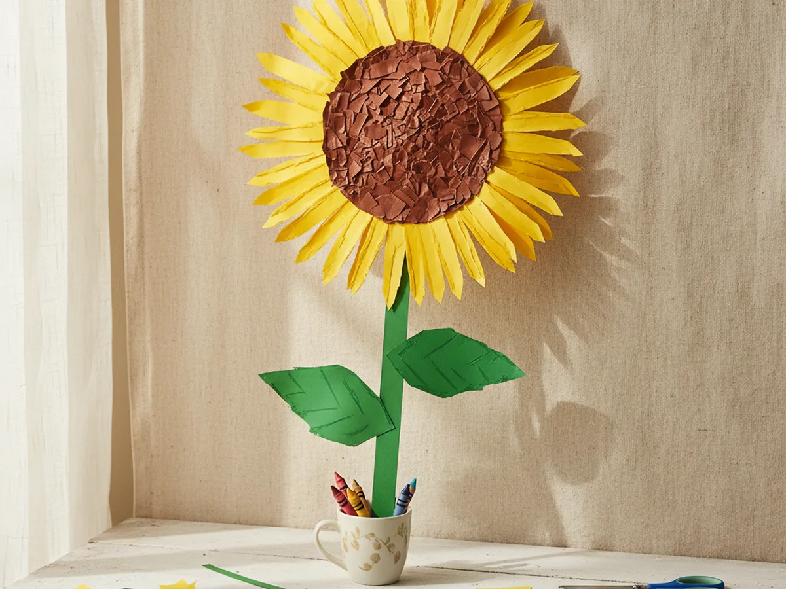
14. Paper House Scene
Cut out simple house shapes, trees, clouds, and a sun from different colors of paper and arrange them on a large blue or green cardstock background to build a little neighborhood scene. Kids can make it as simple or as detailed as they want, adding chimneys, gardens, fences, and even a paper cat in the window. This open-ended paper crafts idea encourages real creative thinking and storytelling, and the finished scene often becomes a prized display piece for a bedroom wall.
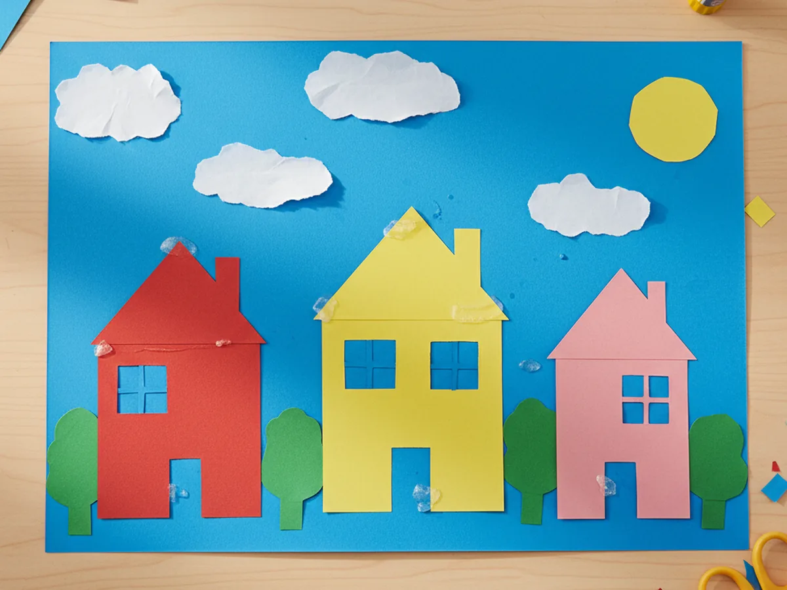
15. Paper Turtle
Cut a large oval from green paper for the shell, then cut a slightly smaller oval from a lighter green for the body peeking out beneath it. Add four small rounded leg shapes, a small head with two googly eyes, and a tiny curved tail at the back. Use a marker to draw the shell pattern of hexagon segments. This is a charming and easy paper craft idea that preschoolers find very manageable, and the cute finished turtle is impossible not to love.
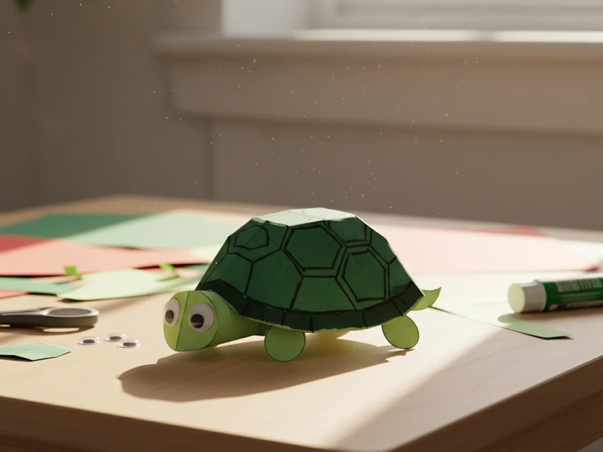
16. Paper Star Wand
Trace and cut two identical star shapes from yellow or gold paper, glue a straw or wooden skewer between them as the handle, and press the two stars together to sandwich the stick inside. Once dry, decorate with glitter glue edges or tiny dot stickers for a sparkly finish. Every child who gets one of these instantly wants to wave it around and cast spells. Among wearable paper crafts ideas, this one inspires the most imaginative play of any project on the list.
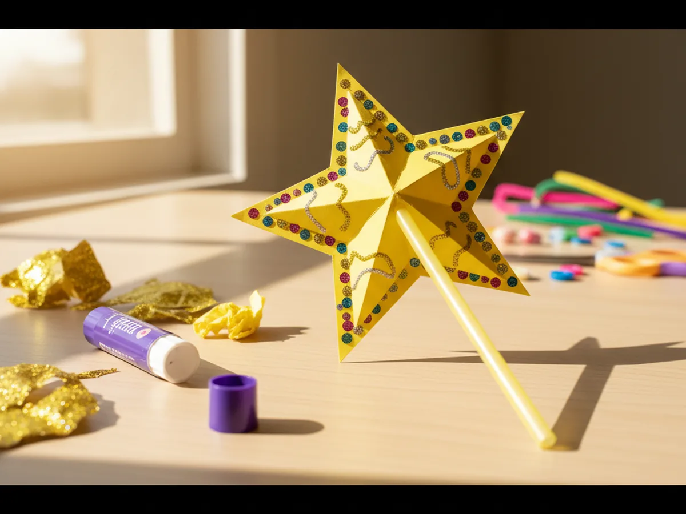
17. Paper Frog
Fold a green square of paper into a simple jumping frog shape by making a series of folds that compress the back legs into a spring-like position. Press the back of the frog down and release it to watch it jump forward with a satisfying hop. Add two small round googly eyes and your frog is ready for a jumping contest. This classic paper craft idea is one that kids will do again and again the moment they figure out how to make it jump properly.
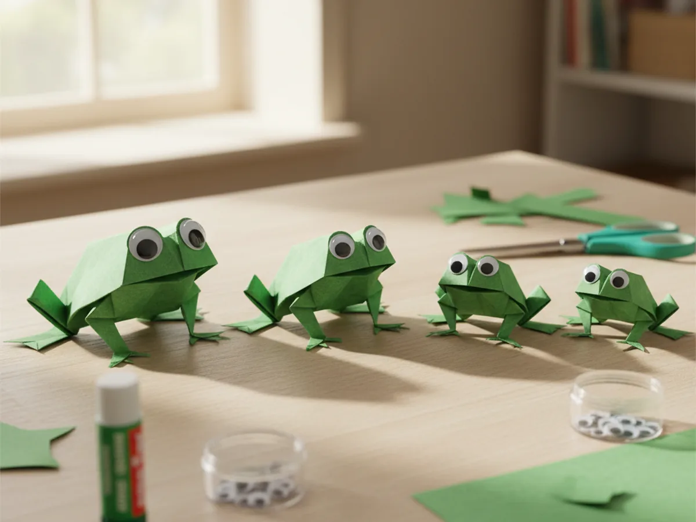
18. Paper Kite
Cut a traditional diamond kite shape from a bright sheet of paper, decorate it with stripes or swirls, and attach a long tail made from a strip of paper with small tissue paper bows tied at intervals. Hang it from a window or doorway and watch the tail drift gently in any breeze. This is a lovely paper crafts idea for a windy spring day, and even the youngest kids can help glue the bow shapes onto the tail while an older sibling handles the kite itself.
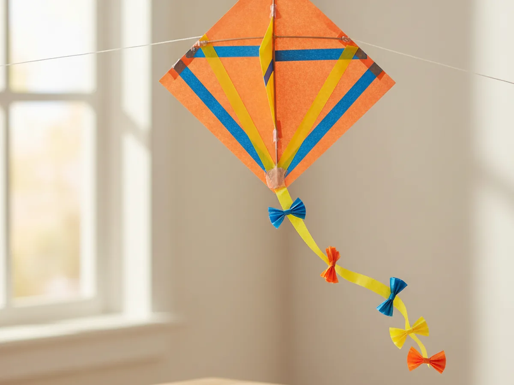
19. Paper Bird Mobile
Cut simple bird silhouettes from colorful paper, fold each body slightly so the wings angle upward, and hang them from a branch or cardboard crossbar using string at different lengths. Vary the sizes and colors for the best visual effect. The birds drift and turn slowly with any movement in the air. This is one of the most beautiful paper crafts ideas on this list, and the finished mobile looks wonderful above a baby's crib, a reading corner, or a sunny window.
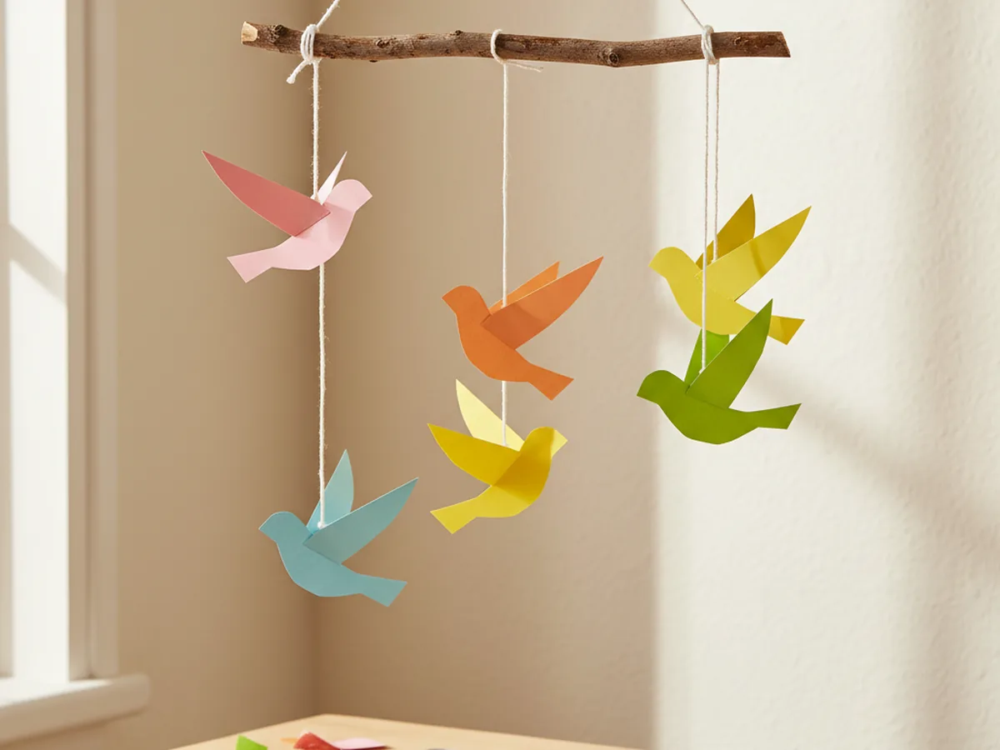
20. Paper Treasure Box
Fold two square sheets of cardstock using the classic masu box method, making one slightly larger than the other so one fits inside the other as a lid. Decorate the outside with cut-paper patterns, stickers, or painted designs before assembling. The box is sturdy enough to hold a small toy, a folded note, or a few special keepsakes. Making and giving a handmade box is one of those paper crafts ideas that feels meaningful to both the maker and the recipient. 🎁
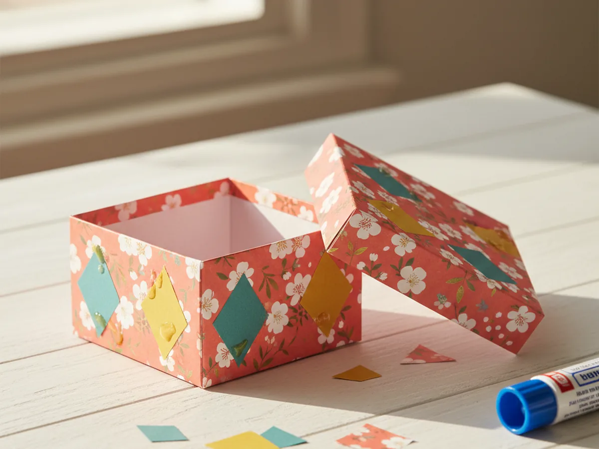
Final Thoughts
There is something really special about the moment a child realizes that a plain sheet of paper can become almost anything. These paper crafts ideas are designed to be easy to start, satisfying to finish, and low on stress for everyone at the table. You do not need special skills or fancy supplies, just some colored paper, a little time, and a willingness to create something together. 🌟
Pick one idea that feels right for today and go from there. The best craft is always the one you actually sit down and make.
More Crafts You'll Love
If you enjoyed these ideas, here are two more paper craft articles worth exploring together.
Happy crafting with your little one!